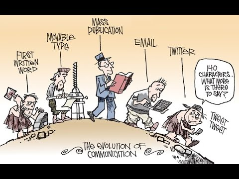
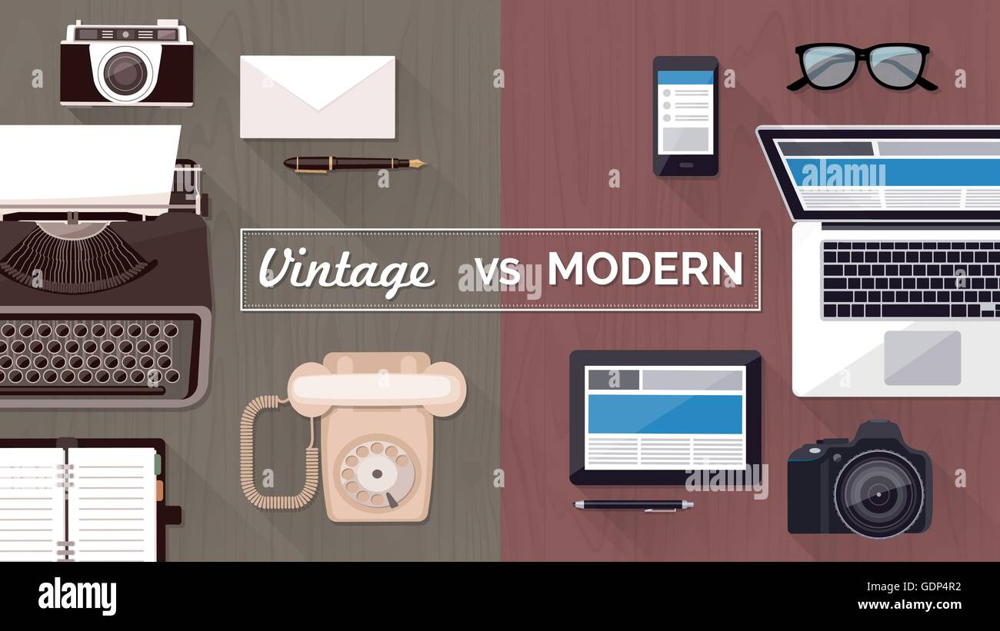
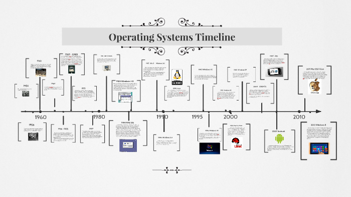
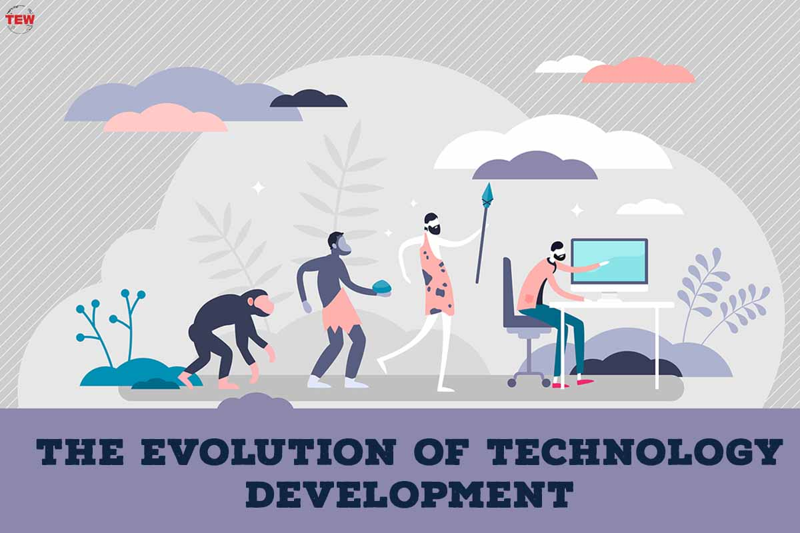
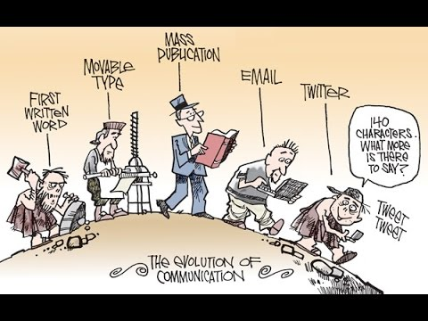
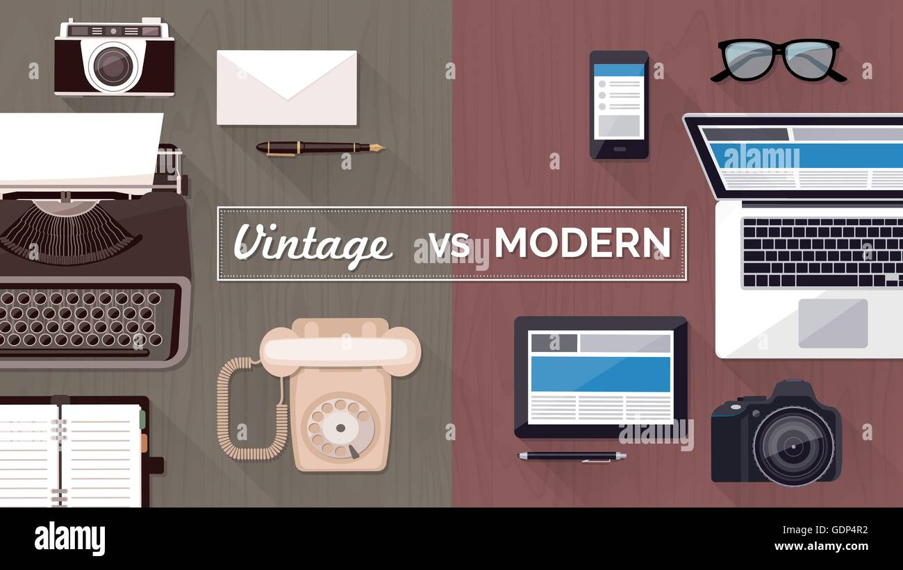
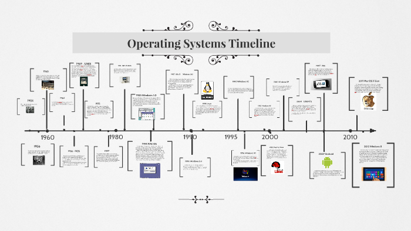
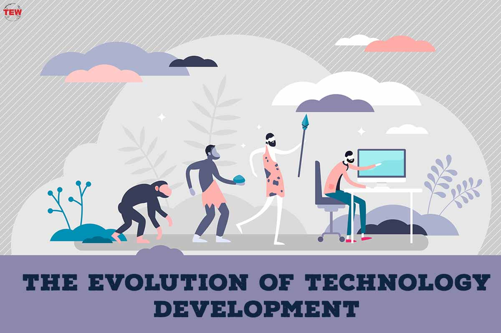

National Technology Day is celebrated in India on May 11th every year to commemorate the historic achievement of Indian scientists who successfully carried out the nuclear tests at Pokhran on May 11, 1998. The day is celebrated to honor the contribution of scientists and engineers towards the development of technology in the country. It also aims to encourage young people to pursue careers in science and technology and inspire them to innovate and contribute to the development of the nation. Various events and seminars are organized on this day to discuss the latest advancements in technology and the future of the field.
 







Technology has become an integral part of our day-to-day lives, impacting us in numerous ways. The constant updating and advancement of technology have brought several benefits, including improved communication, increased efficiency, and enhanced safety. Updation of technology enables us to stay connected with the world and access information instantly from anywhere. It has revolutionized the way we work, learn, and socialize. The incorporation of modern technologies in industries and businesses has led to increased productivity and reduced costs. The healthcare industry has also benefited immensely from technology, with the development of medical equipment and systems that have significantly improved patient care. Moreover, technology has improved transportation and made travel faster and more comfortable. With the growth of e-commerce and online shopping, technology has also made shopping convenient and accessible. In conclusion, technology plays a crucial role in our daily lives, and regular updating of technology ensures that we can continue to reap its benefits and stay connected in an ever-changing world.